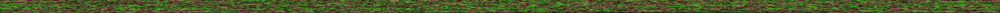
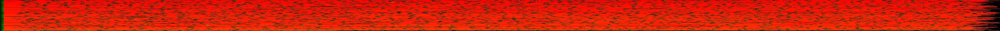

Lucas Pihl Fredriksson
View CVDownload CV
TrueType Font (TTF) Parser and Text Rendering
Background
The reason why, I decided to dedicate my specialization to this, was due to an interesting algorithm suddenly being dedicated to the public domain, namely the Slug Algorithm. In the past, I have used other text rendering techniques, where the idea is to preemptively rasterize the glyphs of fonts into a font atlas (a large texture composed of numerous glyphs), and then sampling said texture to blit it unto the desired target. These methods were reliant on a font engine, such as FreeType, to provide the developer with a convenient interface for converting a font file into these font atlases. There are primarily two kinds which are used.
- Bitmap: The glyphs are rasterized, as is, and are directly rendered without the need of a specialized shader. This is the easiest to implement, as a general shader used for rendering textures would suffice. However, this techinque comes with a caveat, where the resolution of each glyph is fixed to the font atlas, meaning any divergence would either cause blurriness (upscaling), or aliasing (downscaling). To support other font sizes, subsequent font atlases must be generated to maintain quality.
- Signed Distance Field(SDF) and its derivatives: The glyphs are still rasterized, but encode more data through multiple color channels. This allows a specialized shader to ensure the quality, even when the glyphs were generated at a much lower resolution, compared to a bitmap font atlas; furthermore, it allows more glyphs to be crammed into a singular texture, allowing for less memory usage, and potentially less draw calls when rendering large quantities of unqiue glyphs.
Rendering
What makes the Slug Algorithm different from the aforementioned, is a change in philosophy: Suppose we could efficienctly render the vectors directly on the GPU in real-time? The algorithm works by compressing two types of data into two separate textures:
- Curve Texture: This texture contains the quadratic Bézier Curve data needed to render each simple glyph.
- Band Texture: This texture contains the supplementary data needed to optimize the usage of the Curve Texture. This works by slicing the glyph, dividing it into a grid of horizontal and vertical bands, which can be used to cull irrelevant curves that do not intersect a specific band.


Although the Slug Algorithm requires the most compute heavy shader out of the aforementioned techinques, it does also provide the highest quality. Where infinite scaling is possible, a property of vector graphics. Furthermore, if I would ever need an SDF or bitmap font atlas in the future; I could use this implementation, as I would a font engine, to generate them at any resolution, further exemplifying its usage.
Parsing
I made an adequately spec-compliant TrueType Font (TTF) file parser to facilitate rudimentary typesetting of single-color glyphs.
To achieve this. The following Font Tables needed to be parsed:
- maxp: Provides the glyph count, needed to continue parsing.
- head: Provides the unit-to-em factor, needed to ascertain the proportions of the font.
- hhea: Provides the metric count needed for parsing the hmtx font table.
- hmtx: Provides an array of metrics, necessary for proper advancement and spacing of the glyphs; where if the metric count retrieved from the hhea table is lesser than the glyph count found in the maxp font table, the remaining glyphs would only use the left side bearing of the last metric entry, a compression used in certain monospace fonts.
- cmap: Provides character maps for a wide range of formats and maps them to the glyph identifiers.
- loca: Provides a lookup table for glyph identifiers to indices, needed for correctly mapping glyph identifiers to their respective glyph data (simple glyph and compound glyph).
- glyf: Provides the curves within each simple glyph entry, and transformations in compound glyph entries where multiple simple glyph entries may be composited to make one.
The font tables, mentioned above, are the ones used to achieve the result, as shown, in the Rendering section. This list took quite some time to condense, as there were little information on how to go from a TTF file to the two requisite textures needed for the Slug Algorithm (Curve and Band). However, through trial and error, I eventually managed to achieve a result which I am keen to use in future projects, as a lightweight dependency.